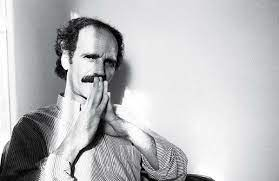

Welcome to Digital Text
"Once a new technology rolls over you, if you're not part of the steamroller, you're part of the road." - Stewart Brand, Writer
The Project
This page is dedicated to my digital texts and my university project related to the course taught by Professor Mancinelli during the academic year 2022-2023. In the following sections, I will elaborate on the project's topic, objectives, and methodology. Additionally, it's worth noting that this project was conducted individually by Atousa Heidarnia (DHDK student).This scholarly endeavour embarks on a profound investigation of the renowned short story, "The Man with the Red Tie," with a deliberate focus on an intricately selected eight-page excerpt. Through the judicious application of the Text Encoding Initiative (TEI) framework, this project aspires to conduct a nuanced and multi-dimensional analysis of the chosen text. Central to this scholarly pursuit is the strategic integration of verse and facsimile elements within TEI, poised as instrumental tools to unlock the narrative's profound strata of meaning and visual artistry. The overarching purpose of this academic undertaking is dual-fold: to leverage the capabilities of TEI for the meticulous representation of the selected narrative and to facilitate a comprehensive scholarly examination that transcends conventional paradigms of literary interpretation.
Houshang Golshiri
Houshang Golshiri (1938-2000) was one of the most prominent Iranian writers of the 20th century, with his seminal body of work spanning more than three decades of Iran’s most tumultuous years. He was one of the first writers of his country that utilized modern literary techniques of narration, and one of the handful of his contemporaries whose work has been translated into other languages. Recently, the Stanford Libraries have made a large number of Golshiri’s autograph manuscripts and typescripts available online, allowing the general public to get a sense of how he constructed his short stories and novellas.
The man with the red tie
"The Man with the Red Tie" (مردی با کراوات سرخ) is a celebrated novella by the Iranian writer Houshang Golshiri. This work, published in 1974, is a significant and thought-provoking piece of modern Persian literature. "The Man with the Red Tie" revolves around a nameless protagonist, referred to simply as the man with the red tie. The novella is set in Iran during a period of social and political upheaval in the 20th century, where the intelligentsia and creative individuals grapple with the constraints of a repressive society. The man with the red tie symbolizes the artist and intellectual who stands in opposition to the prevailing forces of conformity and oppression. As he navigates the challenges and tribulations of his time, he becomes a compelling representation of the struggle for individuality, self-expression, and authenticity in a society that seeks to suppress these qualities. Throughout the novella, Golshiri delves into the psychological and emotional turmoil experienced by the protagonist as he contends with societal expectations, censorship, and the constant threat of persecution. The narrative explores themes of identity, alienation, and the artist's quest for creative freedom.
Black Parrot , Green Crow

The book Black Parrot, Green Crow. It is a collection of short stories written by Hushang Gulshiri edited by Moayyad Heshmat. The book brings together eighteen short stories and three poems by Golshiri, one of the most influential writers of Persian prose in the twentieth century. The stories span Golshiri's career as a writer, from his days as a young student in Isfahan under the Pahlavi regime to the 1980s and 1990s, reflecting the disappointment of the Iranian people with the Islamic Republic. The tales expose the fanatical and draconian political apparatus of tyrannical regimes, while Golshiri's wry humor and delicate sensitivity to the human condition temper the blistering satire, making the narratives short but nonetheless harrowing and touching tragedies. One of the stories in this collection is "The Man with the Red Tie". It demonstrates Golshiri's sarcasm and humor in a refreshingly obvious manner. The story mocks a savak (National Organization for Intelligence and Security) agent who is charged with watching an innocent person and collecting information about him.
My Scholarly Perspective
From my scholarly perspective, the Text Encoding Initiative (TEI) stands as an invaluable method within the field of digital humanities. It possesses the capability to systematically deconstruct and represent textual content with meticulous precision, affording researchers like myself the opportunity to conduct profound examinations of literary works. TEI, in essence, transcends mere transcription; it serves as a potent instrument to encapsulate the core essence of a narrative through sophisticated encoding, incorporating elements such as verse and facsimile, thereby conveying not only the textual content but also the essence and artistic qualities embedded within it. This method facilitates the uncovering of latent meanings, subtle nuances, and intricate visual artistry, transforming the exploration of literature into a multi-faceted and comprehensive endeavor. In my view, TEI emerges as the master key that unlocks the treasure trove of literary works, granting us the privilege to appreciate their depth and complexity in manners hitherto unattainable.